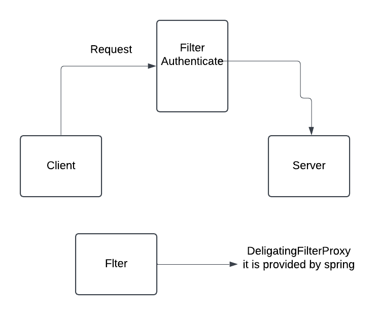
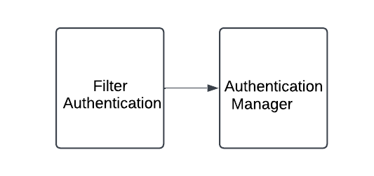

Spring Security Overview
Spring Security is a robust and customizable framework used to secure Java applications. It provides authentication, authorization, and other security-related functionalities, making it easier to secure web applications, RESTful services, and microservices.
1. Authentication
Authentication is about verifying who the user is. Spring Security allows you to authenticate users through various means, such as:
- Form-based login
- HTTP Basic and Digest Authentication
- JWT (JSON Web Tokens)
- OAuth2 and OpenID Connect for social login integration
It supports multiple methods and providers, such as in-memory, database, LDAP, and custom implementations.
2. Authorization
Authorization controls what actions a user can perform. After a user is authenticated, Spring Security checks if they have the right permissions or roles to access specific resources.
- URL-based security: Restricts access to URLs (e.g., only admins can access
/admin). - Method-level security: Uses annotations like
@PreAuthorizeor@Securedto restrict access to specific service methods based on roles or permissions. - Domain object-level security: Provides fine-grained access control on objects.
Spring Security Internals
1: DelegatingFilterProxy
- This is a filter provided by Spring Security to delegate the security-related filter tasks.
- It will extract the request and it will convert into authentication object.
- Because filter doesn't know how to authenticate. It doesn't have any logic. 
- So flter will delegate the authentication request to AuthenticationManager.
2: Authentication Object
When a user submits login credentials, these details are wrapped in an Authentication object, which holds:
- The principal: Usually the username or user details.
- The credentials: Like the password or any other authentication token.
3: AuthenticationManager

- It also doesn't know how to authenticate.
- It deligates request to AuthenticationProvider.
4: Authentication Provider
- There are multiple authenticate Provider are there.
- one authenticate provier knows how to authenticate request based on token.
- second authenticate provier knows how to authenticate request based on userName and password.
- one authenticate provier knows how to authenticate request based on LDAP/outh2.
Prvider Manager: Provider Manager will identify the appropiate authenticate provider to perform this authentication mechanism.
- AuthenticationProvider will invoke the authenticate() method
- But it doesn't have any information to check. SO it load the user from external resource (DB)
- So it will take the help from UserDetailsService.
UserDetailsService: UserDetailsService will go to external DB or cache and it will load the UserDetails object and return to AuthenticationProvider.
- Now the AuthenticationProvider will validate and return valid authentication object to the Provider Manager.
- Now ProviderManager return same object to the filter.
- The filter will set this authentication object into SecurityContext.

Spring Boot 2.0 REST API with Security and MySQL Database
Step 1: Setup Spring Boot Project
- Create a new Spring Boot project:
- Go to Spring Initializr and generate a new project with the following dependencies:
Spring Web,Spring Security,Spring Data JPA,MySQL Driver
- Configure application.properties:
Add the following configuration to connect to the MySQL database:
spring.datasource.url=jdbc:mysql://localhost:3306/your_database_name spring.datasource.username=your_db_username spring.datasource.password=your_db_password spring.jpa.hibernate.ddl-auto=update spring.jpa.show-sql=true
Step 2: Create the Entity
Create an entity class that represents the table in the MySQL database:
@Entity
public class User {
@Id
@GeneratedValue(strategy = GenerationType.IDENTITY)
private Long id;
private String username;
private String password;
private String role;
// getters and setters
}
Step 3: Create the Repository
Create a repository interface for CRUD operations:
@Repository
public interface UserRepository extends JpaRepository<User, Long> {
Optional<User> findByUsername(String username);
}
Step 4: Configure Spring Security
To secure the API, use Spring Security to configure basic authentication. This example uses in-memory authentication with passwords stored in the database.
- Password Encoding:
Configure a password encoder bean:
@Bean public PasswordEncoder passwordEncoder() { return new BCryptPasswordEncoder(); } - Security Configuration:
Create a
SecurityConfigclass to define HTTP security rules:@Configuration @EnableWebSecurity public class SecurityConfig extends WebSecurityConfigurerAdapter { @Autowired private CustomUserDetailsService userDetailsService; @Bean public PasswordEncoder passwordEncoder() { return new BCryptPasswordEncoder(); } @Override protected void configure(AuthenticationManagerBuilder auth) throws Exception { auth.userDetailsService(userDetailsService).passwordEncoder(passwordEncoder()); } @Override protected void configure(HttpSecurity http) throws Exception { http.csrf().disable() .authorizeRequests() .antMatchers("/api/public/**").permitAll() .antMatchers("/api/private/**").authenticated() .and() .httpBasic(); } } - Create a Custom UserDetails Class:
Define
CustomUserDetailsclass that implements UserDetailsimport org.springframework.security.core.GrantedAuthority; import org.springframework.security.core.authority.SimpleGrantedAuthority; import org.springframework.security.core.userdetails.UserDetails; import java.util.Collection; import java.util.Collections; public class CustomUserDetails implements UserDetails { private final User user; public CustomUserDetails(User user) { this.user = user; } @Override public Collection getAuthorities() { return Collections.singletonList(new SimpleGrantedAuthority(user.getRole())); } @Override public String getPassword() { return user.getPassword(); } @Override public String getUsername() { return user.getUsername(); } @Override public boolean isAccountNonExpired() { return true; } @Override public boolean isAccountNonLocked() { return true; } @Override public boolean isCredentialsNonExpired() { return true; } @Override public boolean isEnabled() { return true; } public User getUser() { return user; } } - User Details Service:
Implement
UserDetailsServiceto load user details from the database:@Service public class CustomUserDetailsService implements UserDetailsService { @Autowired private UserRepository userRepository; @Override public UserDetails loadUserByUsername(String username) throws UsernameNotFoundException { User user = userRepository.findByUsername(username) .orElseThrow(() -> new UsernameNotFoundException("User not found")); return new CustomUserDetails(user); } }
Step 5: Create REST Controller
Create a REST controller to handle HTTP requests. Here’s an example of a basic API:
@RestController
@RequestMapping("/api")
public class UserController {
@Autowired
private UserRepository userRepository;
@GetMapping("/public/hello")
public String publicHello() {
return "Hello, this is a public endpoint!";
}
@GetMapping("/private/hello")
public String privateHello() {
return "Hello, this is a private endpoint!";
}
@GetMapping("/users")
public List<User> getAllUsers() {
return userRepository.findAll();
}
@PostMapping("/users")
public User createUser(@RequestBody User user) {
user.setPassword(new BCryptPasswordEncoder().encode(user.getPassword()));
return userRepository.save(user);
}
}
Step 6: Run and Test the Application
- Start the application with
mvn spring-boot:run. - Use an API client like Postman to test the endpoints.
GET /api/public/helloshould be accessible without authentication.GET /api/private/helloandGET /api/usersshould require authentication.
This setup secures the API using HTTP Basic authentication. You can extend it by using JWT (JSON Web Token) authentication for a more secure and stateless approach.